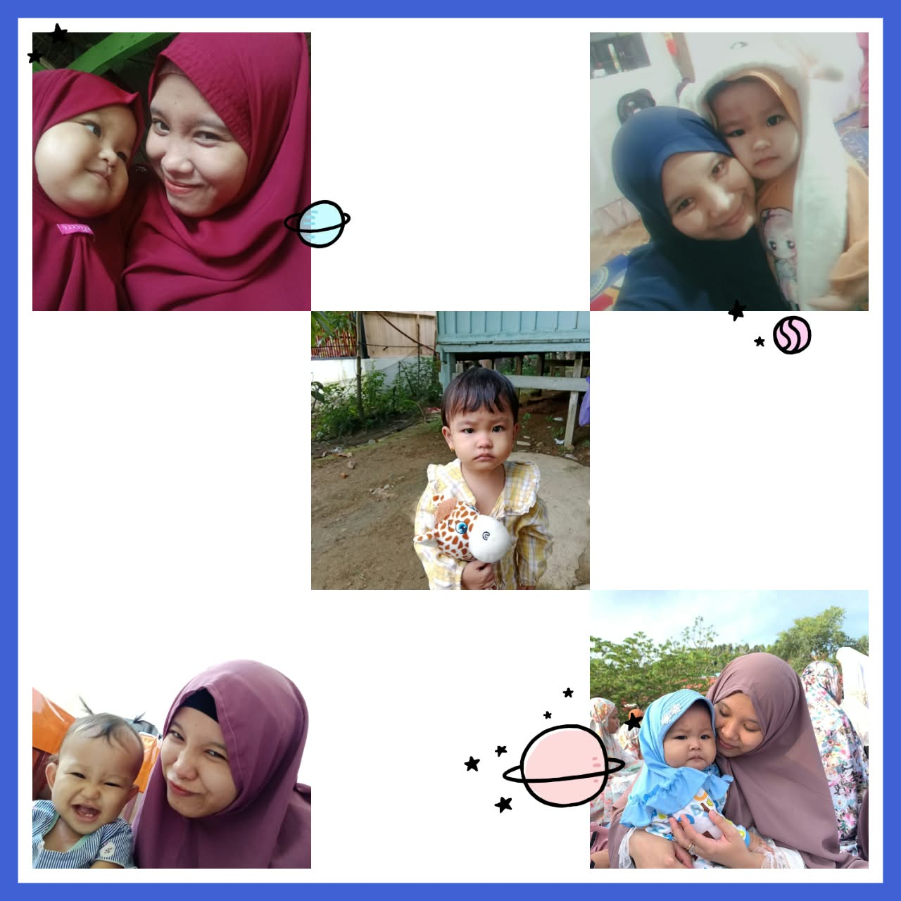

Yaumul Milad ke-29 يَوْمُ الْمِيلَاد
Yaumul Milad

Nur Cahyani
Surat
Barakallahu fii ’umrik, sayang. Dua puluh sembilan tahun, dan aku bersyukur kamu ada di rumah kita. Terima kasih sudah mengurus kami dengan sabar, bahkan di hari-hari ketika kamu sendiri sedang lelah.
Sekarang Ummah sedang membawa adik untuk Hana, aku tahu itu tidak ringan. Tapi lihat Hana, dia tumbuh dengan banyak sekali sayang dari ibunya. Istirahat yang cukup ya, dan jangan sungkan minta tolong.
بَارَكَ اللّٰهُ فِي عُمْرِكِ Barakallahu fii ’umrik, Ummah.
Untuk Ummmah
-
Terima kasih sudah menjadi istri yang baik dan perhatian.
-
Terima kasih telah menjadi ibu yang sangat sayang sama Hana.
-
Semoga Ummah selalu dalam lindungan Allah SWT, dan semoga kehamilan anak kedua ini dimudahkan dan dilancarkan sampai hari kelahirannya, dengan Ummah dan si kecil sehat selalu.
Doa
رَبَّنَا هَبْ لَنَا مِنْ أَزْوَاجِنَا وَذُرِّيَّاتِنَا قُرَّةَ أَعْيُنٍ وَاجْعَلْنَا لِلْمُتَّقِينَ إِمَامًا
Rabbana hab lana min azwajina wa dzurriyyatina qurrata a’yunin waj’alna lil-muttaqina imama.
“Ya Tuhan kami, anugerahkanlah kepada kami pasangan dan keturunan kami sebagai penyejuk mata (kami), dan jadikanlah kami pemimpin bagi orang-orang yang bertakwa.”
Ya Allah, lindungi Ummah dan si kecil di dalam kandungannya. Mudahkan dan lancarkan sampai hari kelahirannya.